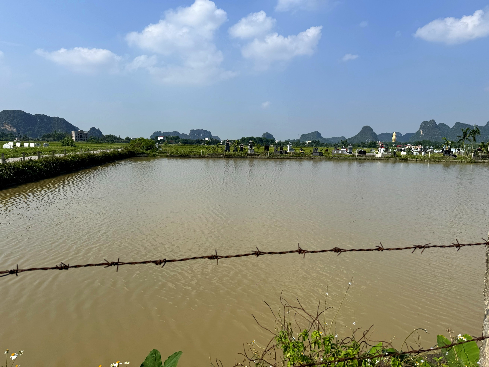

Loại hìnhTypeType
Trải nghiệm nông nghiệpAgricultural experiencesExpériences agricoles

Farm Cá Quả Mường Cốc là điểm dừng chân thư giãn độc đáo giữa hành trình khám phá Mường Cốc, nơi du khách được nằm võng nghỉ chân bên ao cá quả rộng lớn. Ao cá quả (còn gọi là cá lóc) của gia đình ông Nguyễn Tất Thành được nuôi theo phương thức tự nhiên, tạo nên một không gian yên bình đặc trưng của miệt vườn Mường.
Quán cà phê võng đơn giản nhưng ấm cúng nằm ngay bên ao, nơi du khách có thể vừa nhấm nháp ly cà phê, vừa quan sát đàn cá quả quẫy đuôi dưới mặt nước xanh và cho chúng ăn. Đây là trải nghiệm "nghỉ ngơi có chủ đích" – chậm lại, lắng nghe tiếng ao, tiếng gió và cảm nhận nhịp thở của làng quê Mường.
Muong Coc Snakehead Fish Farm is a unique and relaxing stop amidst your Muong Coc exploration, where visitors can unwind in hammocks by a large snakehead fish pond. Mr. Nguyen Tat Thanh's family raises these snakehead fish (also known as ca loc) naturally, creating a peaceful atmosphere characteristic of the Muong garden region.
This simple yet cozy hammock cafe is nestled right by the pond, where visitors can sip coffee while observing snakehead fish flicking their tails beneath the green water and feeding them. This is an experience of "intentional rest" – slowing down, listening to the sounds of the pond and wind, and feeling the pulse of the Muong countryside.
La ferme de poissons Cá Quả Mường Cốc est une halte relaxante unique au milieu de votre exploration de Mường Cốc, où les visiteurs peuvent se détendre dans des hamacs au bord d'un grand étang de poissons Cá Quả (poisson-serpent). L'étang de poissons Cá Quả de la famille de M. Nguyễn Tất Thành est élevé de manière naturelle, créant un espace paisible caractéristique de la région des jardins Mường.
Ce café hamac simple mais chaleureux est niché juste au bord de l'étang, où les visiteurs peuvent siroter un café tout en observant les poissons Cá Quả agiter leurs queues sous l'eau verte et les nourrir. C'est une expérience de "repos intentionnel" – ralentir, écouter le son de l'étang, le vent et ressentir le souffle de la campagne Mường.
| Nghỉ chân – cà phê võngHammock coffee breakPause café en hamac | Thư giãn trên võng bên ao, phục vụ đồ uốngRelax in a hammock by the pond, with drinks served.Détendez-vous dans un hamac au bord de l'étang, avec des boissons servies. |
| Cho cá quả ănFeed the Snakehead FishNourrir les poissons-serpents | Tương tác với đàn cá quả tự nhiênInteract with natural snakehead fishInteragissez avec les poissons-serpents naturels |
| Tham quan ao cáVisit the fish pondVisite de l'étang à poissons | Tìm hiểu mô hình nuôi cá quả tự nhiênDiscover natural snakehead fish farming.Découvrez l'élevage naturel de poissons-serpents. |
| Trải nghiệm miệt vườnExplore the lush fruit gardens.Découvrez la vie au verger. | Đi dạo vườn, ngắm cảnh, chụp ảnh thiên nhiênStroll through the garden, admire the scenery, and capture stunning nature photos.Promenez-vous dans le jardin, admirez le paysage et capturez de superbes photos de la nature. |
| Ẩm thực địa phươngAuthentic Local FlavorsSaveurs locales authentiques | Phục vụ theo đặt trướcServed by prior reservationService sur réservation préalable |

Farm Cá Quả Mường Cốc hướng tới trở thành điểm nghỉ chân đặc trưng trong lịch trình tham quan Mường Cốc – nơi du khách được trải nghiệm phút giây thư giãn thực sự bên thiên nhiên. Gia đình dự kiến phát triển thêm dịch vụ câu cá theo đặt trước và cải thiện không gian quán cà phê võng để đón tiếp đoàn khách lớn hơn, đồng thời giới thiệu cá quả như một đặc sản ẩm thực địa phương. Điểm đến Du lịch cộng đồng Mường Cốc, Xã Mỹ Đức – Thành phố Hà NộiFarm Cá Quả Mường Cốc aims to become a distinctive resting stop on the Mường Cốc tour itinerary – where visitors can experience true moments of relaxation amidst nature. The family plans to develop pre-booked fishing services and improve the hammock cafe space to welcome larger groups, while also introducing snakehead fish as a local culinary specialty. A Mường Cốc Community Tourism Destination, My Duc Commune – Hanoi City.Le Farm Cá Quả Mường Cốc vise à devenir une halte distinctive sur l'itinéraire de visite de Mường Cốc – où les visiteurs peuvent vivre de véritables moments de détente au cœur de la nature. La famille prévoit de développer des services de pêche sur réservation et d'améliorer l'espace du café-hamac pour accueillir des groupes plus importants, tout en présentant le poisson-serpent comme une spécialité culinaire locale. Une destination de tourisme communautaire de Mường Cốc, commune de My Duc – ville de Hanoi.